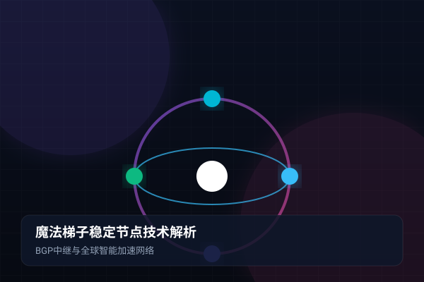
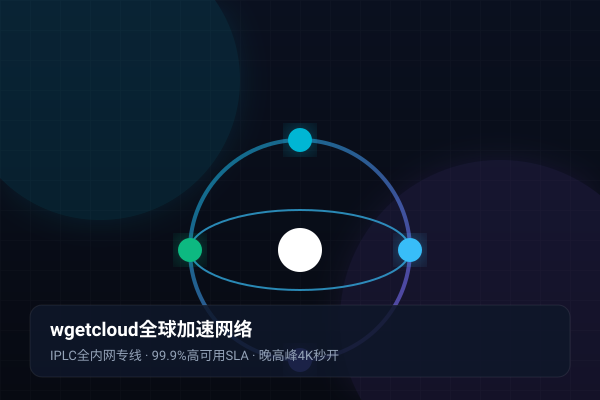

1. 梯子频繁掉线与卡顿的底层技术原因
几乎所有使用过科学上网工具的用户，都曾经历过以下令人抓狂的场景：正开着国际视频会议，画面突然定格转圈；刚打到外服游戏的关键团战，延迟瞬间从 40ms 暴增至 999ms；又或者 YouTube 4K 视频看了一半，进度条死死卡住无法继续。大部分人往往简单归咎于“今天网络不好”，但从计算机网络工程角度看，背后的技术根源主要集中在三点：
- 运营商跨网互联恶化（QoS 限速）：国内三大基础电信运营商（电信、联通、移动）之间的网间互联带宽极其有限。如果你使用的是移动宽带，而机场的入口部署在电信单线机房，跨网传输的流量在晚高峰期会被运营商的路由器执行严格的 QoS 限速和随机丢包。
- 公共国际出口海缆拥塞：中国大陆所有通往海外的普通公网流量，最终都要汇聚到上海、广州、青岛等少数几个国际海缆登陆站。每到晚上 20:00~23:00 的家庭用网高峰，公网海缆带宽负载率常常突破 95%，导致 TCP 拥塞重传急剧增加，表现为梯子断流。
- GFW 深度包检测与主动重置（TCP RST）：普通代理协议在公网传输时，若被防火墙算法检测到可疑特征，防火墙会伪造 TCP RST 重置数据包，强制中断两端会话，导致客户端必须重新建立握手，体验极差。
2. BGP 优质多线接入如何解决跨网互联壁垒
为了从源头上解决跨网访问延迟高的问题，高水准的 安全机场服务 会在数据入口处采用 BGP (Border Gateway Protocol，边界网关协议) 多线机房：
BGP 协议允许单台入口服务器同时宣告电信、联通、移动以及教育网的自治系统（AS）路由。当一个中国移动的用户发起连接时，BGP 路由器会自动选择移动骨干内网将数据送达；当电信用户接入时，则通过电信专属骨干直达。通过消除了运营商之间的网间结算壁垒，入口延迟可以被极致压缩至 5ms~15ms 以内，彻底告别“移动连不上、电信卡成狗”的尴尬窘境。
3. 跨国海缆切断与公网拥塞的防御手段
太平洋与东亚海底经常因地震、渔船拖网作业等不可抗力发生海底光缆切断事故（如过去数年中多次发生的新加坡-香港海缆故障）。普通的便宜机场由于只租赁了单一 VPS 供应商，一旦海缆发生故障，整组节点可能连续几天处于瘫痪状态。
成熟的全球加速服务商必须具备多路由跨洋冗余网络。当主用海缆发生物理异常时，控制中心会在数秒内将路由智能导向备用的中日陆缆、亚太跨国光缆或经欧洲绕行备用线路，确保核心节点服务不发生单点中断。
4. 端到端专线网络为何能做到“零丢包”
解决梯子掉线问题的终极解决方案，正是前面多次提及的 IPLC / IEPL 内网专线。它与公网代理有着天壤之别：

IPLC 属于租用电信巨头铺设的点对点纯物理局域网通道。它不经过任何公共互联网的路由器跳转，中途没有任何防火墙审查机制，带宽受到严格的运营商服务等级协议（SLA）保护。专线链路的抖动通常小于 1ms，丢包率恒定在 0.01% 以下。无论公网多么拥堵，专线内部的数据流始终如同在专属高铁轨道上全速飞驰。
5. wgetcloud 分布式网络与毫秒级故障自动漂移
wgetcloud官网 自研了全自动化的分布式健康监测探针系统。每一条专线节点的两端，均以每秒数十次的频率互发心跳探测：
一旦某条线路发生任何偶发丢包率上升超过 2% 的微小异常，智能负载调度中枢会立即触发毫秒级平滑热迁移，将后续所有新建数据流引导至同集群的备用专线链路。对于正在进行 Zoom 视频会议或观看 4K 电影的用户而言，整个故障切换过程完全无感，真正实现了“全天候 365 天不间断在线”。
6. 用户端调优：参数优化进一步降低网络抖动
除了服务端底层基建之外，用户在本地客户端中微调几个核心参数，也能让连接稳定性更上一层楼：
- 开启 TCP 并发 (TCP Concurrent)：在 Clash 设置中启用此选项，当发起一个网络请求时，客户端会同时尝试多种连接路径并采用响应最快的那一条，显著减少首包延迟。
- 调优 Tun 模式下的 MTU 数值：如果开启虚拟网卡后偶发某些网页打不开，通常是本地路由器 MTU 封装过长导致分片丢弃。可将 Clash 配置中的 MTU 值由默认的 9000 或 1500 微调为
1400或1420。 - 选择就近的节点接入点：华南地区用户优先选择香港节点，华东地区（江浙沪）优先选择日本节点，北方地区优先选择日韩或美国节点，以获得物理几何距离上的最短传输时延。
体验专线极速体验 - 告别卡顿与断连
wgetcloud 提供真正的 IPLC 内网专线与多平台 Clash / Clash Party 智能客户端，晚高峰 4K 视频秒开无压力。
关于本篇主题的常见疑难问题（FAQ）
针对上述教程与实际配置过程中高频出现的网络、规则、测速与订阅问题，我们为您整理了以下专业解答：
因为普通节点的公网出口在晚高峰面临严重的国际骨干网拥挤，丢包率激增触发 TCP 拥塞控制，导致带宽雪崩。而真正的内网专线（如 wgetcloud）完全避开了公网，全天保持相同的高速与稳定性。
跨国传输受到光速传播物理极限与 TCP 拥塞控制窗口算法的制约。单线程测速很难跑满千兆带宽；如果使用多线程并发下载工具，wgetcloud 专线可以轻松拉满数百兆乃至千兆的极速。
网络游戏对 UDP 协议的抖动非常敏感。建议使用 wgetcloud 专门标注了游戏支持的 IPLC 游戏专用节点，并在客户端开启 Tun 模式代理，可将外服延迟锁定在平稳的 30ms 左右。
倍率是指消耗流量的计算系数。例如 1.0x 代表使用 1GB 实际扣除 1GB 流量；0.5x 代表使用 1GB 只扣除 0.5GB；而极高防或特殊原生 IP 节点可能会设定更高的倍率。wgetcloud 节点计费透明规范，性价比极高。